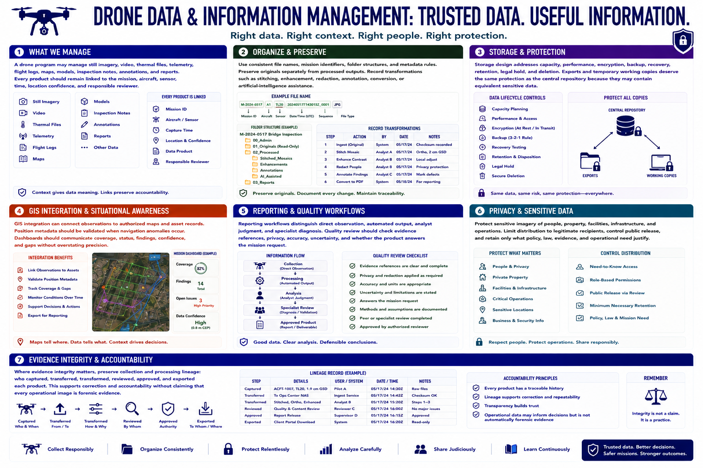

Data Management and Intelligence Products
Connecting to LMS... Progress: in progress

Narration
A drone program may manage still imagery, video, thermal files, telemetry, flight logs, maps, models, inspection notes, annotations, and reports. Every product should remain linked to the mission, aircraft, sensor, time, location confidence, and responsible reviewer.
Use consistent file names, mission identifiers, folder structures, and metadata rules. Preserve originals separately from processed outputs. Record transformations such as stitching, enhancement, redaction, annotation, conversion, or artificial-intelligence assistance.
Storage design addresses capacity, performance, encryption, backup, recovery, retention, legal hold, and deletion. Exports and temporary working copies deserve the same protection as the central repository because they may contain equivalent sensitive data.
G I S integration can connect observations to authorized maps and asset records. Position metadata should be validated when navigation anomalies occur. Dashboards should communicate coverage, status, findings, confidence, and gaps without overstating precision.
Reporting workflows distinguish direct observation, automated output, analyst judgment, and specialist diagnosis. Quality review should check evidence references, privacy, accuracy, uncertainty, and whether the product answers the mission request.
Protect sensitive imagery of people, property, facilities, infrastructure, and operations. Limit distribution to legitimate recipients, control public release, and retain only what policy, law, evidence, and operational need justify.
Where evidence integrity matters, preserve collection and processing lineage: who captured, transferred, transformed, reviewed, approved, and exported each product. This supports correction and accountability without claiming that every operational image is forensic evidence.